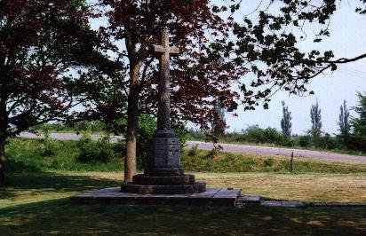
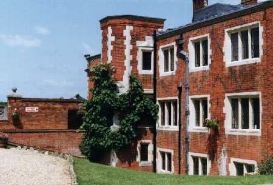
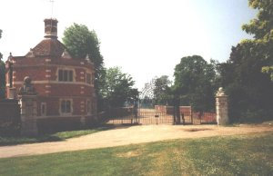
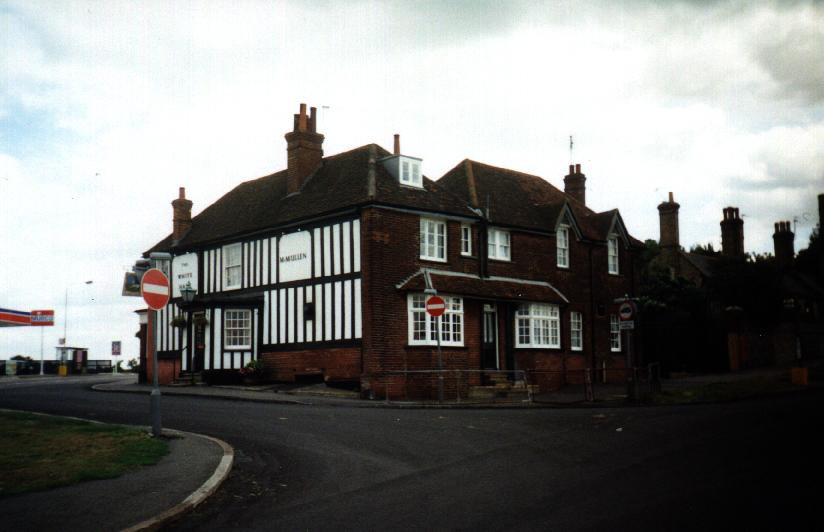
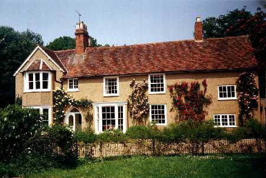
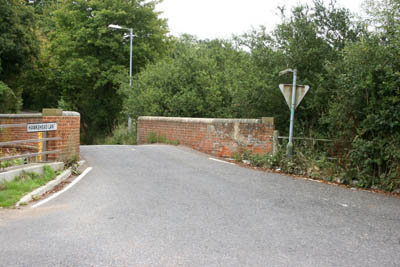
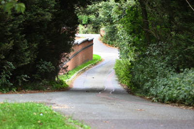
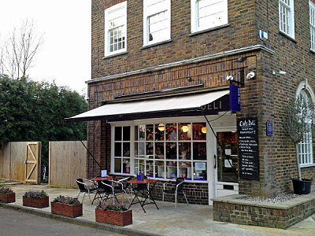
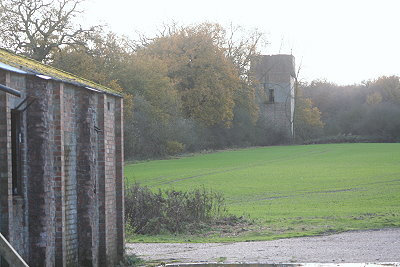

K2: North Mymms Park, Tollgate Road, nr. Welham Green

K1: War Memorial, North
Mymms, Tollgate Road

THE
AVENGERS: Never, Never
Say Die (Robert Day: February 1967)
The ambulance carrying Doctor Stone (Christopher Lee)
tops at a road
junction and Stone forces his way out. An orderly who has been throw to
the ground can only watch as the Doctor walks off into nearby woodland.
(Spotted by Alan Field, June 2008)
RANDALL
AND HOPKIRK [DECEASED]: But
What a Sweet Little Room (Roy Ward Baker: Summer
1968)
Arthur takes Jeff in his car to Mrs Fenwick's house passing the
memorial on the way.
K2: North Mymms Park,
Tollgate Road, nr. Welham Green

THE
BARON: The Man Outside
(Roy Baker: September 1966)
After calling to see if there are any Americans renting the house
Mannering leaves in his Jensen.
THE
BARON: Countdown
(Robert Asher: October 1966)
The Baron and Cordelia drives in his Jensen to Parkstone House and park
at the front of the house. Arkin Morley drives off in a Rover with
Cordelia and shoots at the Baron as he leaves, The Baron follows.

THE
AVENGERS: The Hidden
Tiger (Sidney Hayers: January 1967)
Steed arrives at the PURRR HQ and drives through the main gates, over
the bridge and up to the house past many 'No Dog' signs, Mrs Peel
arrives later to investigate the van. Steed attacks a guard at night
and places him in the van, and Mrs Peel does the same to Angora
(Gabrielle Drake).
THE
PROFESSIONALS: Lawson’s
Last Stand (Ian Sharp: 1981)
George Cowley (Gordon Jackson) goes to interrogate
visit Lavinia Lawson
(Helen Cherry) about her missing son on the pretext
of discussing her
late husband. After leaving he parks his car by the gatehouse to radio
headquarters.
Films:
BOYS WILL BE BOYS (1935)
THE HORROR
OF FRANKENSTEIN (1970)
YELLOWBEARD (1983)
GREYSTOKE (1984)
K3: St. Albans Road, South
Mimms

THE
PRISONER: The Girl Who
Was Death (David Tomblin: November 1967)
The Jaguar is pursued by the Lotus Elan past the White Hart on the
junction of Blanche Lane and St. Albans Road.
K4: North Mymms, nr.
Welham Green

THE
AVENGERS: The Hidden
Tiger (Sidney Hayers: January 1967)
Steed drives to Nesbitt, the big game hunter's, house. (The
Old
Vicarage). As he draws up to the house in his green Landrover
he hears
a shot and enters the house.
THE
AVENGERS: Something
Nasty in the Nursery (James Hill: March 1967)
Steed drives to the Guild of Noble Nannies in his Bentley to
investigate the baby bouncer. Mrs Peel arrives in her Lotus Elan to
report to Steed. After talking to Nanny Roberts he leaves. Gordon
(Trevor Bannister) is sent to deal with Steed when
he comes snooping
round the Guild of Noble Nannies a second time. Mrs Peel watches Miss
Lister as she drives Nanny Roberts away in a Mini van. Mrs Peel then
enters the house.
THE
AVENGERS: Mission ...
Highly Improbable (Robert Day: September 1967)
The Rolls Royce carrying Sir Gerald Bancroft (Kevin Stoney)
is escorted
to the testing site by a military escort along a narrow county lane
(Tollgate Road). Gifford (Nicholas
Courtney) is shocked when the Sir
Gifford and the Rolls disappear after clearing the checkpoint. Later
Mrs Peel arrives at the house (The Old Vicarage) on
Steed's
instructions to watch over Professor Rushton's daughter Susan (Jane
Merrow). Mrs Peel is kidnapped in mistake for Susan by
Henrick (Nosher
Powell) and Karl (Dinny Powell).
DEPARTMENT
S: The Pied Piper of
Hambledown (Roy Ward Baker: Summer 1968)
Jason King, whilst investigating the extent of the disappearances of
the inhabitants of Hambledown, calls in at a house near the churchyard
(Church Cottage).
K5: Hawkshead Lane and
Swanland Road, Water End nr. Welham Green

DEPARTMENT
S: The Pied Piper Of
Hambledown (Roy Ward Baker: Summer 1968)
Jason King drives Stewart Sullivan to Doctor Brogan's house.

DEPARTMENT S: A Small War of Nerves (Leslie
Norman: Spring 1969)
Wiltshire, England, April 20th (shot from the footpath that runs
between Hawkshead Lane and Cranborne Road).
(Spotted by Alan Field, June 2023)

RANDALL
AND HOPKIRK [DECEASED]: But
What a Sweet Little Room (Roy Ward Baker: Summer
1968)
The route Arthur de Crecy takes when he drives Jeff to meet Anne
Fenwick (unnamed road between Hawkshead Lane and Swanland
Road).
(Spotted by Claire and Michael Saunders, 2004 and
independently
identified by Alan Field, September 2008)
K6: 'Budgie's Cafe', Dixon’s Hill, Welham Green, (now a private residence)
RETURN
OF THE SAINT: The
Diplomat's Daughter (Charles Crichton: 1978)
Marie de la Garde (Lynn Dalby) arrives at the
Budget Restaurant in
Simon’s Jaguar. Shriver (Karl Held) is already
there, waiting for the
car. Simon Templar (Ian Ogilvy) arrives on his
motorbike, ST2, and
waits for Shriver. After dealing with Shriver he has to deal with
Michel (Weston Gavin) before the police arrive.
(Identified by Chris Wright, December 2005)
Film:
NEVER TOO YOUNG TO ROCK
(1976)
THE
PROTECTORS: Shadbolt
(John Hough: 1973)
After jumping from the train, Shadbolt (Tom Bell)
follows Harry Rule
(Robert Vaughn) to a deserted quarry (quarry
alongside the A1 just off
Swanland Road, the quarry has been backfilled) where a game
of cat and
mouse ensues. Shadbolt attempts to crush Harry when he takes shelter in
a cabin, but Harry escapes and is eventually victorious. The police and
an ambulance arrive to take Shadbolt away.
(Spotted by Alan Filed, June 2008)
Television:
THE PROFESSIONALS: Slush Fund (1979)
K9: The Brookmans Hotel,
Bradmore Green, Brookman's Park

JOURNEY
TO THE UNKNOWN: The
New People (Peter Sasdy: 1968)
Hank Prentiss meets Matt Dystal for the first time at the local of
licence.
(Identified by Geoff Dodd, December 2008)
K10: Home Farm, North
Mymms Park

THE
AVENGERS: The £50,000
Breakfast (Robert Day: July 1967)
Site of the accident where Rhodes is killed.
(Identified by David Harris, November 2009)
K11: Blackhorse Lane,
South Mimms

photo: Rhett Burns
RANDALL
AND HOPKIRK [DECEASED]: The
House on Haunted Hill (Ray Austin: April 1969)
Jeff and Marty leave the Merston Manor in the Vauxhall at the end of
the episode.
(Idenitfied by Rhett Burns, 1st October 4, 2012)